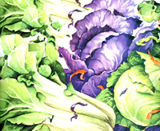

I don't know about you, but there always seems to be a cabbage hiding in the back of my refrigerator that resembles a biology experiment. Though I buy them for their economical and long-lasting merits, cabbages have the unfortunate knack of rolling to a dark corner of my refrigerator, where they can grow mold quietly. The solution, I've found, is to attach a few recipes to the refrigerator door. With the secret to a simple slaw pinned beneath a "Kiss the cook, she's German" magnet staring me in the face, I'm less likely to donate the cabbage corpse to science.
There are good reasons to incorporate one of the oldest cultivated vegetables into our diet. The most common cabbages are the red and green varieties, savoy and Chinese cabbages, and napa and bok choy. Like broccoli, cauliflower, Brussels sprouts and other cruciferous vegetables, cabbage is high on the list of anti-cancer foods, offering a potent mix of fiber and antioxidants such as vitamin C and beta-carotene. It also contains plant compounds, or phytochemicals, that, studies suggest, can inhibit the formation of carcinogens. Indeed, research at the University of Illinois is showing that phytochemicals, along with other components in cruciferous vegetables, seem to interfere with the cancer process by slowing, stopping or even reversing it.
Phytochemicals apparently also have an effect on the estrogen produced in women's bodies. Dr. Bradlow of the Strang Cornell Research Laboratory in New York found that by giving women a daily capsule of a particular phytochemical for three months, he was able to rid their bodies of a hazardous form of estrogen known to increase the risk of breast cancer. To get the same benefit, you'd need to eat about a quarter of a cabbage daily. (Savoy cabbage and purple broccoli are your best natural sources of the phytochemical.)
This year, when our neighbor insists that we take her garden cabbage surplus, I'll be armed with my slaw recipes, ready to declare war on cancer-and cabbage mold.
Though the tops and leaves of supernutritious broccoli contain more nutrients than the stems, even these lower parts pack a healthful punch. Instead of wasting your garden broccoli stems, grate them into a slaw. (You can buy pregrated, prepackaged stems at the supermarket, but they're usually dried out and tasteless.)
2 cups coarsely grated broccoli stem (about 6 stems)
1 cup grated carrot (1 large carrot)
1 cup diced broccoli tops
2 green onions, chopped
Dressing:
1/2 cup low-fat garlic or ranch dressing
1 tablespoon lemon juice
1/4 cup nonfat plain yogurt
In a large mixing bowl, toss together the vegetables. (Use a large hand grater or the larger grating attachment on a food processor.) in a smaller bowl, whisk the dressing until smooth. Toss into the slaw, then salt and pepper to taste. Serve immediately or refrigerate up to an hour.
This is one of my favorite summer salads-perfect for dinner on a hot summer's night. I used "Chinese Plain Noodles" made by Kame, which I bought at Whole Foods, but you can use any thin pasta such as cappelini or thin Japanese udon noodles.
1/2 lb. boneless, skinless chicken breast
1 clove garlic
4 ounces thin pasta
5 to 6 cups grated green cabbage (about half cabbage)
1/2 cup grated carrot
1 small carrot
4 green onions, chopped
1 cup cilantro, chopped
Dressing:
1/4 cup rice vinegar (I use seasoned rice vinegar.)
1/4 cup toasted sesame oil*
1 teaspoon chili oil*
1 tablespoon tamari or soy sauce
1 tablespoon sugar
1/2 teaspoon freshly grated ginger (peel before grating)
1/2 teaspoon salt
freshly ground pepper or Szechwan pepper**
Place the chicken, a crushed garlic clove and enough water to cover the chicken in a small skillet. Cover and simmer for about 15 minutes until the chicken is no longer pink in the center. Remove and place on a plate to cool at room temperature. Boil water for the pasta. Break the pasta in half and put into the boiling water for about two minutes until tender (don't overcook). Transfer to a colander and rinse with cold water until the pasta has cooled. Let drain. Tear the chicken into thin shreds.
Cut the cabbage into quarters. Thinly slice by hand or in a food processor using a two millimeter slicing disk. Combine pasta, cabbage and carrot in a large bowl. Whisk the dressing together measuring cup. Heat the dressing microwave until hot but not boiling (about 50 seconds). Pour over the pasta salad and toss. Mix in the green onions and add additional chili oil or pepper as needed. Serve topped with chicken and chopped cilantro. If you make the salad ahead of time, wait to add the dressing, green onions and cilantro until just before serving.
Chili oil and toasted sesame oil: Chili oil is a chili-infused oil found in the Asian food section of the grocery. Usually sesame oil is used and is the flavorful. Keep refrigerated because oils can become rancid when left at room temperature for too long. If you can't find chili oil, use cayenne pepper or mince up a small piece of serrano or jalapeno pepper (wear rubber gloves). Toasted sesame oil has a much richer flavor than plain sesame oil and can also be found in the Asian section of the grocery. Less oil is needed when you use the toasted oil because it's so flavorful.
**Szechwan pepper: We like to make this mixture using our garden cilantro that goes to seed in August. If the coriander seeds are still green, let them dry out on a cookie sheet at room temperature for a few days (though, they're best when left to dry on the cilantro plant). Measure out equal amounts of seeds and black peppercorns into a skillet over medium-high heat. Keep shaking the pan for a minute or two until the seeds and peppercorns are toasted and the pan is smoking. Remove immediately to a bowl to cool then put into your pepper grinder. The remaining mixture can be stored in a jar.
Variations: Make a vegetarian slaw by omitting the chicken and adding firm, diced tofu. I prefer to saute the cubes until crispy, then let them cool on paper towels before adding to the slaw. You may also omit the grated carrot in favor of any garden vegetables that you have on hand, including radishes or thinly sliced red pepper.
Here's an easy slaw that I like to serve with burgers or ribs. It's also good on top of a grilled turkey burger or chicken breast. If you don't like it spicy, leave out the hot pepper.
4 cups shredded, green cabbage (1 small cabbage)
1 small red onion, finely chopped
1/2 cup chopped, curly parsley
1/2 poblano or green pepper, diced
1/ 4 teaspoon minced jalapeno pepper with seeds removed (optional)
Dressing:
1/3 cup "lite" canola mayonnaise
2 tablespoons barbecue sauce
2 tablespoons lemon juice
1 teaspoon white wine vinegar
1/2 teaspoon sugar
In a large bowl, whisk together the dressing ingredients. Stir in the rest of the ingredients and refrigerate up to an hour. Salt and pepper to taste before serving.
The idea for this main course salad came from an Amish cookbook. The original dressing called for sour cream and buttermilk, but I reduce the fat by using low-fat cottage cheese instead.
2 cups shredded red cabbage
2 cups lettuce or spinach leaves
3 green onions, chopped
1 cup chopped broccoli tops
3 pieces cooked bacon, crumbled (I use bacon without nitrates.)
1/2 to 2/3 cup grated white cheddar cheese
Dressing:
3/4 cup low-fat cottage cheese
1/2 cup low-fat buttermilk
1 teaspoon white wine vinegar
1 small clove garlic
1/4 teaspoon salt
ground pepper and a dash of cayenne
Wash the vegetables and dry well, then grate and chop them. In a large bowl, toss together the salad ingredients, putting the bacon and cheese aside. In a blender, blend the dressing until smooth. Toss the dressing into the salad and dish out onto a platter. Sprinkle with bacon and cheese. The dressing can be made a day or two ahead of time.
Bok choy means "cabbage" in Cantonese. You can substitute napa, savoy or green cabbage if you like.
9 to 10 cups sliced bok choy
6 green onions, chopped
1 cup red, white or daikon radishes, thinly sliced
4-ounce bag of frozen cooked salad shrimp (optional)
fresh mint leaves, coarsely chopped
Dressing:
1/3 cup smooth peanut butter (I use unsalted natural peanut butter.)
2 large cloves garlic, chopped
1 tablespoon peeled and chopped gingerroot
1 tablespoon honey
2 teaspoons tamari or soy sauce
2 teaspoons rice vinegar
dash of cayenne pepper or chili oil
about 1/4 cup boiling water
In a blender mix all of the dressing ingredients, including the boiling water. Blend until smooth, adding a few drops more water if its too thick (the sauce should be the consistency of ketchup). Refrigerate in a plastic container until needed. The sauce will get thicker when it's chilled. This dressing keeps for at least a week.
To make the slaw, defrost the shrimp unopened in a bowl of cold water. Dry the vegetables thoroughly after washing so they don't add liquid to the dressing. Slice the bok choy crosswise into thin slices. Rinse the shrimp and pat dry with paper towels.
Just before serving, toss the salad ingredients with the dressing. (The salad gets unappetizingly soggy if the dressing is added ahead of time.) Serve topped with fresh mint.
|
|
 |
|